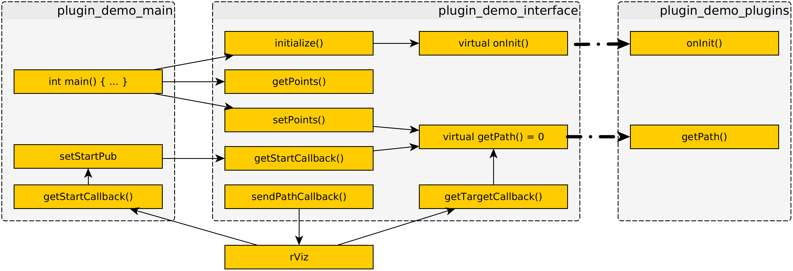

The Source Code could be found on GitHub.
This project is devided into three ROS-packages:
- plugin_demo_interface: The PlugIn-Interface for this example
- plugin_demo_plugins: Some PlugIns for this Interface (currently: Direct and DirectOrtho)
- plugin_demo_main: An executable, which includes the Interface and load one of the PlugIns dynamically
The visual_aids package include a tool which helps to show the orientation of points from a path using a PoseArray.
The basic communication between the plugin_demo packages:

- functions are marked with brackets () at the end
- a function which have a "Callback" in his name is assigned to a ROS::Subscriber
- setStartPub is a ROS::Publisher
- rViz is the ROS tool (is used for setting poses)
- a plugIn could also contain ROS::Subscribers or ROS::Publishers
 1.8.6
1.8.6